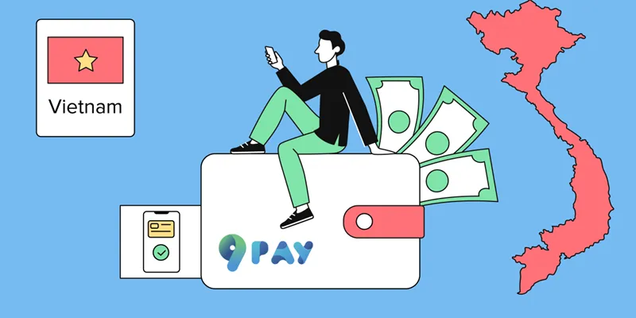

一、越南银行卡支付市场概况
随着越南数字经济的发展，银行卡支付正在成为消费者线上交易的重要方式。越来越多企业在进入越南市场时，需要支持当地银行卡、银行转账以及本地支付方式。因此，稳定的越南银行卡收款通道，成为跨境企业本地化运营的重要基础设施。
二、越南银行卡收款有哪些方式？
目前企业常见的越南银行卡收款方式包括：
- 银行卡在线支付
- 银行转账收款
- 二维码银行支付
- 第三方支付接口
不同业务类型需要匹配不同支付方式， 例如电商、 游戏平台、 数字产品通常需要更加自动化的支付系统。
三、企业为什么需要越南银行卡代收款服务？
海外企业如果直接接入越南银行体系， 通常需要面对：
- 银行合作流程复杂
- 技术开发成本较高
- 本地合规要求
- 支付维护成本
通过专业第三方支付服务商， 企业可以快速获得越南本地银行卡收款能力。
四、越南银行卡支付接口需要哪些功能？
企业级支付接口通常需要包含：
- API接口连接
- 订单创建
- 支付状态查询
- Webhook自动回调
- 异常交易处理
五、UKPay越南银行卡收款解决方案
UKPay连接越南本地支付生态， 为企业提供稳定的银行卡收款能力。 通过UKPay支付接口， 企业可以实现：
- 越南银行卡支付接入
- 本地VND交易支持
- 统一订单管理
- 自动支付通知
- 实时交易查询
相比传统银行直连模式， 企业通过UKPay可以更加快速完成支付系统部署， 降低技术投入。
六、哪些行业适合越南银行卡收款？
跨境电商
支持越南消费者使用本地银行卡付款， 提升购物支付体验。
游戏平台
游戏充值、 虚拟商品购买需要稳定快速的支付通道。
数字服务平台
在线教育、 软件服务、 会员订阅等业务都需要本地收款能力。
七、如何选择越南银行卡支付服务商？
企业选择合作伙伴时， 建议重点关注：
- 支付通道稳定性
- 接口开发能力
- 交易管理能力
- 本地支付资源
稳定、安全、 高效率的支付基础设施， 是企业长期发展的关键。